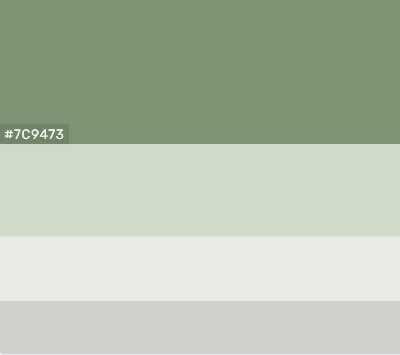

Site Plan
Colors!!
Above are the colors I wish to use. I like the more netural earth tone becuse it adds depth to a page while allowing focal images to standout in contrast to the netural background. From top to bottom the colors have the following hex codes: #7c9473, #cfdac8, #e8eae6, #cdd0cb.
The background will be the lightest color, and the light grey, olive, and sage will be used as accents, but sparingly if at all. A newspaper is black and white and I want this website to emulate that feeling.